4. Greengrass向けLambda関数の登録とサブスクリプションの設定¶
4.1. Lambda関数の登録¶
Greengrassコアにデプロイする Lambda関数を登録します。
はじめに、Lambda関数パッケージを下記のリンクからPCにダウンロードして下さい。このzipファイルは、後ほどLambdaの設定画面でアップロードします。
https://s3-us-west-2.amazonaws.com/greengrass-trial/GGhandsonLambda.zip
このパッケージは、Lambda関数(greengrassCpuUsage.py)の他に、AWS Greengrass コア Python SDKが含まれています。 このSDKは、Lambda関数は実行中にGreengrassコアとの通信を可能にします。
サービス一覧から[Lambda] をクリックして開きます。

下記のような画面が表示されるので、[今すぐ始める] をクリックします。

Lambda関数の作成画面が表示されるので、”Blank Function” をクリックします。
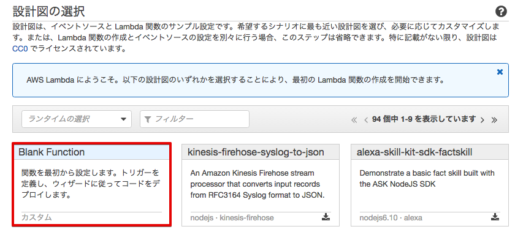トリガーの設定画面が表示されるので、[次へ]をクリックします。
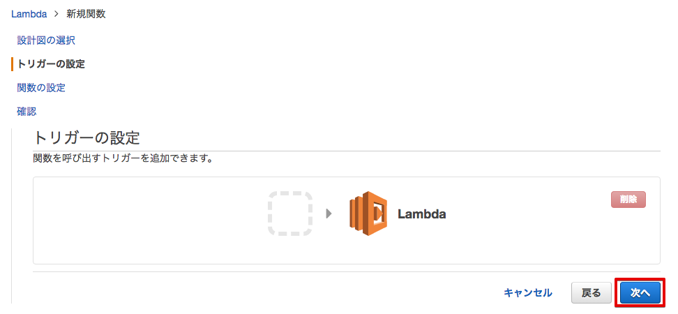ダウンロード済みのLambda関数パッケージ(GGhandsonLambda.zip)をアップロードします。 下記のような画面が表示されるので、必要事項を入力して下さい。
| 項目 | 設定 |
|---|---|
| 名前 | greengrassCpuUsage-<参加者番号> |
| 説明 | ALambda func. to run Greengrass core |
| ランタイム | Python 2.8 |
| コード エントリ タイプ | .ZIPファイルをアップロード |
| 関数パッケージ | GGhandsonLambda.zip |
| ハンドラ | greengrassCpuUsage.message_handler |
| ロール | カスタムロールの作成 |
ロール：[カスタムロールの作成] を選択すると、別画面でIAMの設定画面が出てきます。[許可] をクリックするとIAMの設定画面は閉じます。
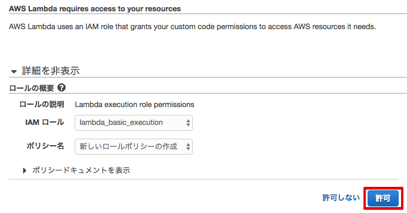Lambdaの画面に戻ります。ロールが [既存のロールを選択] に変更され、ロール名として、”lambda_basic_execution” になって居居ることを確認し、[次へ] をクリックして下さい。
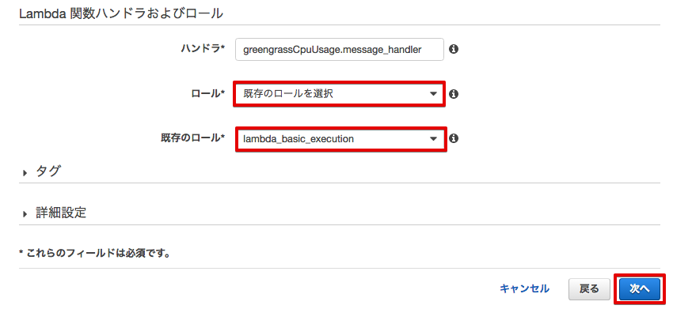確認画面が表示されますので、下までスクロースし、[関数の作成] をクリックして下さい。

Lambda関数の作成に成功すると、下記の様な画面が表示されます。
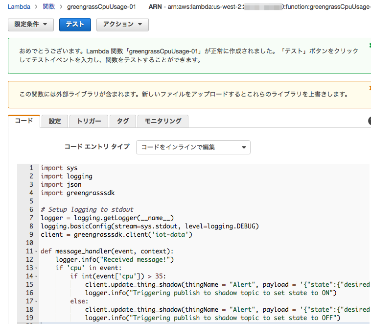Lambda関数のバージョンを設定します。[アクション ▼] メニューから、[新しいバージョンを発行] をクリックします。

[バージョンの説明] に、”Handson” と入力し、[発行] をクリックします。

これで、Lambda関数の登録は、終了です。
次に、このLambda関数をGreengrassクループに追加します。
Greengrassの設定画面に戻り、Greengrassグループ：GGHandsonGroup-<参加者番号> をクリックして下さい。

メニューから [Lambda] をクリックします。
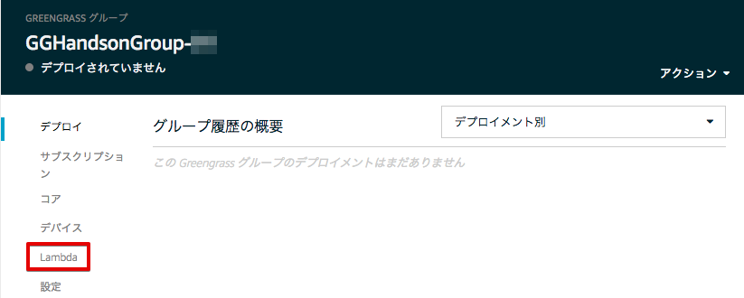[Lambdaの追加] をクリックします。
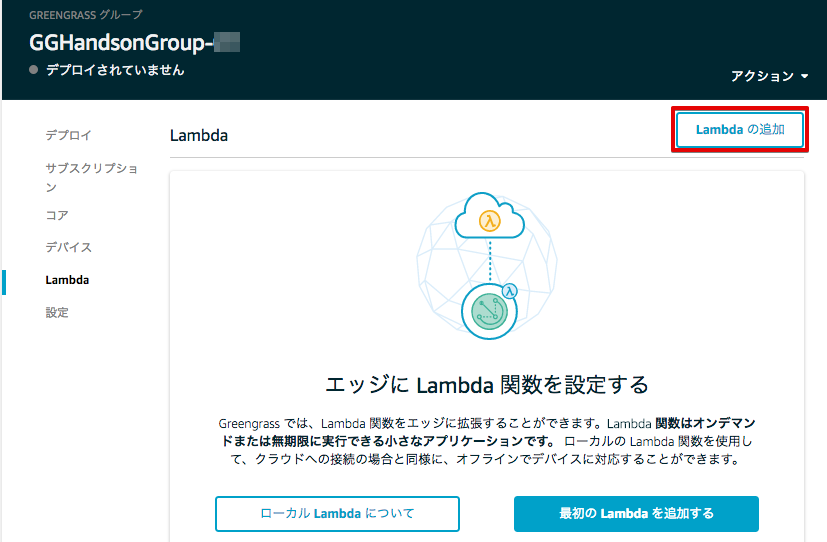[]既存のLambdaの使用] をクリックします。
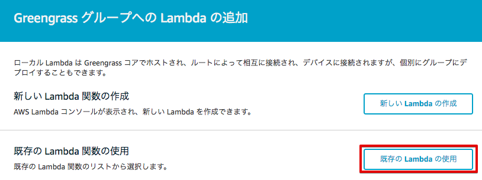[greengrassCpuUsage-<参加者番号>] にチェックを入れ、[次へ] をクリックします。
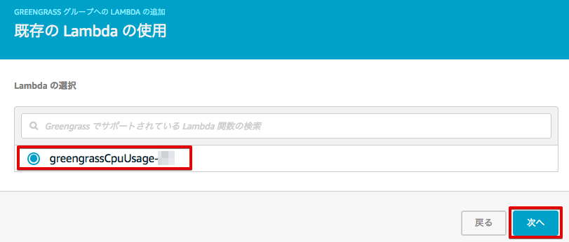先ほど作成したLambda関数のバージョンにチェックを入れ、[次へ] をクリックします。
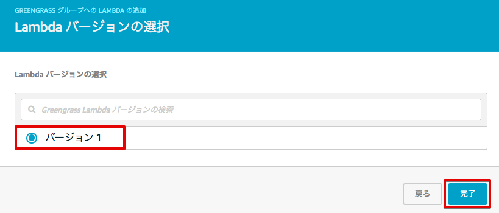Lambda関数のバージョンが、Greengrassグループに追加されました。
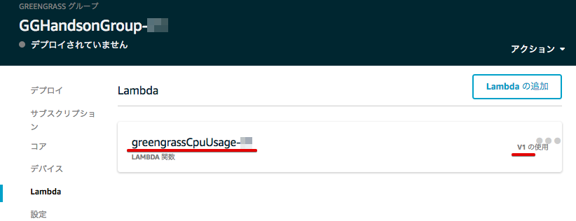4.2. サブスクリプションの設定¶
サブスクリプションは、メッセージの送信先を定義するものです。今回のハンズオンでは、下記のサブスクリプションを設定します。
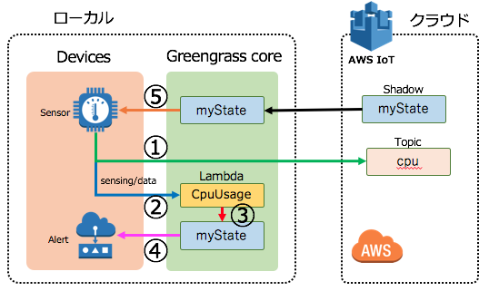| ルート | ソース | ターゲット | トピックフィルター | ||
|---|---|---|---|---|---|
| ① | デバイス | Sensor-00 | サービス | IoT Cloud | sensing/data |
| ② | デバイス | Sensor-00 | Lambda | greengrassCpuUsage-00 | sensing/data |
| ③ | Lambda | greengrassCpuUsage-00 | サービス | Local Shadow Service | $aws/things/Alert/shadow/update |
| ④ | デバイス | Alert-00 | サービス | Local Shadow Service | $aws/things/Alert/shadow/update |
| サービス | Local Shadow Service | デバイス | Alert-00 | $aws/things/Alert/shadow/update/accepted | |
| サービス | Local Shadow Service | デバイス | Alert-00 | $aws/things/Alert/shadow/update/rejected | |
| サービス | Local Shadow Service | デバイス | Alert-00 | $aws/things/Alert/shadow/update/delta | |
| ⑤ | デバイス | Sensor-00 | サービス | Local Shadow Service | $aws/things/Sensor/shadow/update |
| サービス | Local Shadow Service | デバイス | Sensor-00 | $aws/things/Sensor/shadow/update/accepted | |
| サービス | Local Shadow Service | デバイス | Sensor-00 | $aws/things/Sensor/shadow/update/rejected | |
| サービス | Local Shadow Service | デバイス | Sensor-00 | $aws/things/Sensor/shadow/update/delta |
Greengrassの設定画面に戻り、Greengrassグループ：GGHandsonGroup-<参加者番号> をクリックして下さい。